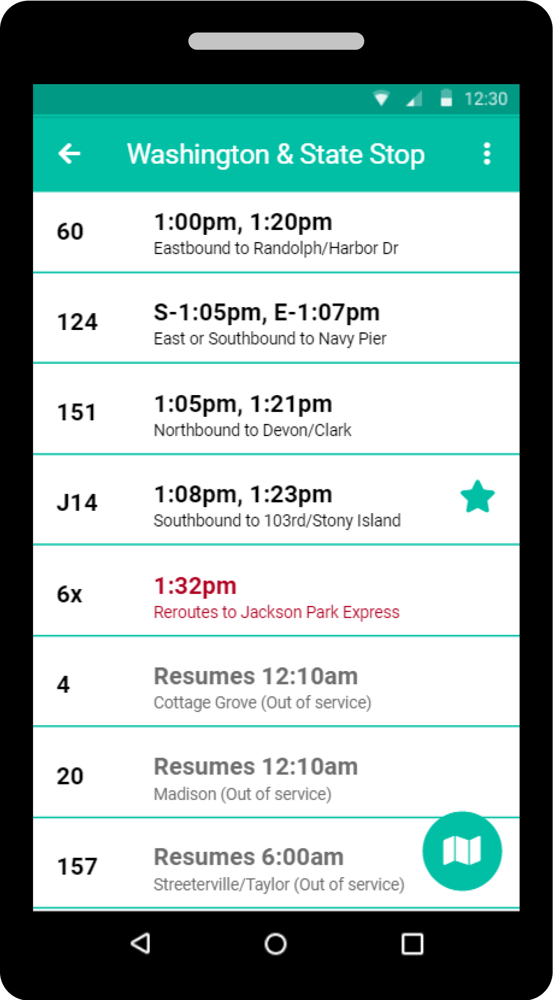
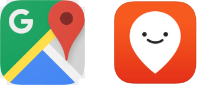
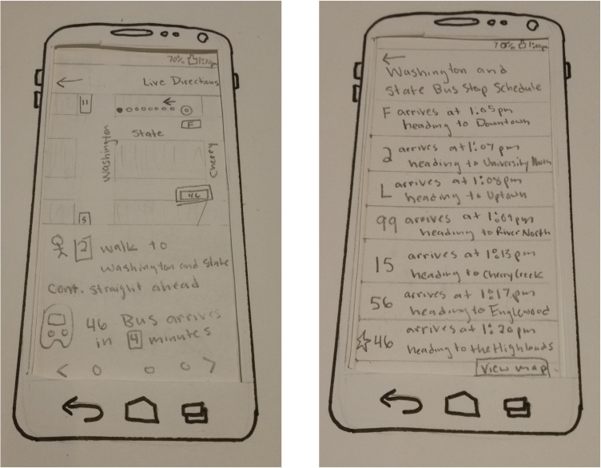
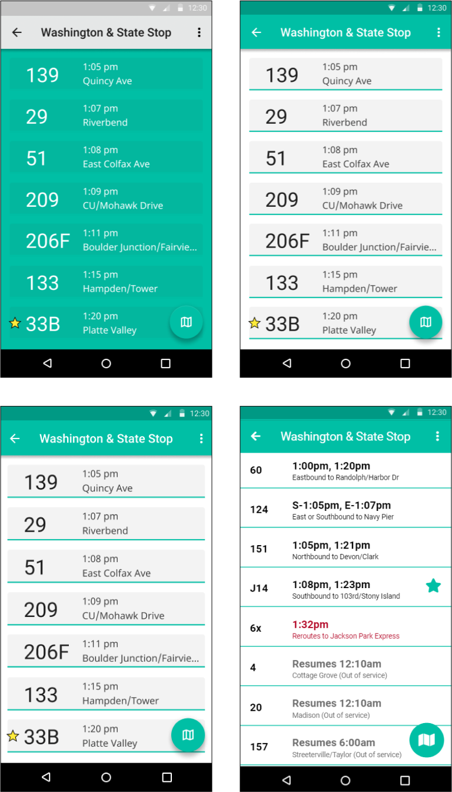

Busy Bus a public transportation app that provides commuters with real-time data about bus line delays, arrivals, and closures.
BUSY BUS CHALLENGE

Problem -
At the “Washington and State” bus stop, there are seven bus routes serving the same bus stop. Riders are complaining about the overly congested bus stop and confusion about when their bus arrives.
Solution -
To show you all seven buses that will be stopping at the “Washington and State” bus stop, what time they get there, and where they are going. Now riders will know what the next arriving bus is and how much time they have to get to the bus stop.
Competitive Analysis
A competitive analysis was done on the transit apps: Google Maps and Moovit. Google Maps has the advantage of offering more services. They create their own maps and have popular destinations to recommend. However, it have a focus and is best at driving directions. That’s where Moovit has the advantage, it’s focused on public transit commuters and their needs. For example, providing bike-share options that will add the location of pick up and drop off points into the directions.

User Survey
A user survey was conducted to provide insight into the behavioral of users and potential users. Over 70% of users were between 26-35 years old, most were teachers and office administrators or coordinators.
- 73% said the top reasons to use public transportation were to avoid expensive or limited parking areas.
- 50% used the bus the more than any other form of public transportation
Important Findings:
- Live Updates
- Live Directions
- Route Options
- Maps
Desired Features:
Designs
The original versions had the map screen, but the map was moved to another screen so that users could more easily see all the buses stopping at “Wahington and State”. Extra wording was also removed and a star was added next user’s bus.

The early medium-fidelity versions had a colorful background instead of a white background. This was changed based on feedback that color should be used judiciously for communication purposes only, especially in a mobile environment. The star was moved to the right side so the user could see route times first.
A final change came during development, the grey boxes were changes grey highlight when selecting the bus route.

UX Research, Information Architecture, Branding, Visual Design, Prototyping, Testing
Design Deliverables:
User Surveys, User Testing, Personas, Competitive Analysis, User Stories & Flows, Wireframes, Visual Design, High-fidelity Prototype
Tools & Software:
Figma, Github, Git Bash, Google Survey and Usabilityhub